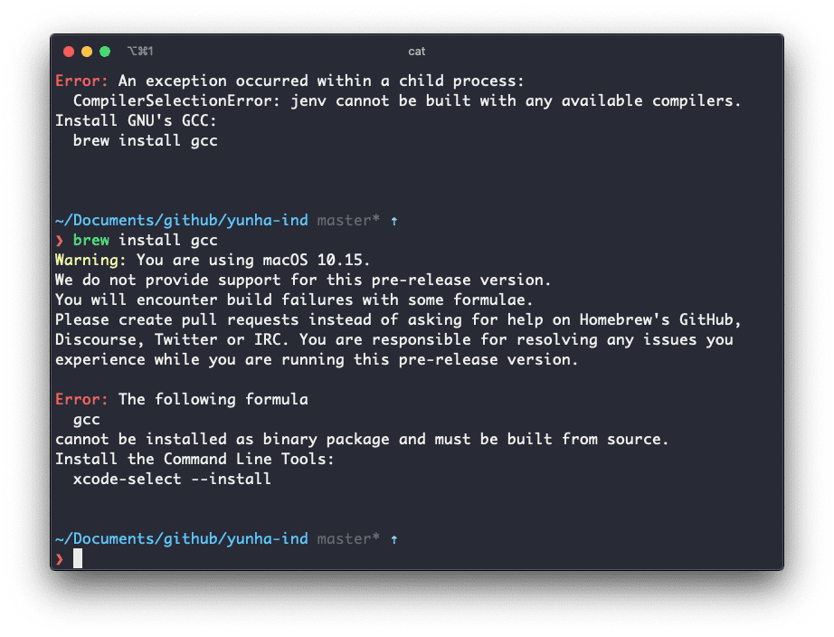

My First blog post
My first blog post using 11ty and Material Design Component.
Updated

this is phasse
A great deal of talent is lost in the world for want of a little courage.
이건 한글이지
동해물과 백두산이 마르고 닳도록
Hi my name is Park, Yunha. I'm the owner of this website. Welcome to all of you guys. Feel free to seeing around.
// this is the comment
const observer = new PerformanceObserver((list) => {
for (const entry of list.getEntries()) {
console.log(entry);
}
})
observer.observe({type: 'layout-shift', buffered: true});Aside 유형
Try it!
Technically, this test will also pass if your site contains any
h1-h6 elements or any of the HTML5 landmark
elements. But although the test is vague in its requirements, it's still
nice to pass it if you can!
Caution: 사용시 주의사항을 작성하는데 사용한다.
Key Term: 용어를 설명할 때 사용한다.
Caution: 주의사항을 작성할 때 사용한다.
Warning: 경고사항을 작성할 때 사용한다.
Success: 성공했을 때 사용한다.
Objective: 목적을 기술할 떄 사용한다.
Gotchas!
강조 하고 싶을 때 사용한다.
Images

Thank you.
마지막 업데이트 날짜:
이 포스트를 개선해주세요!